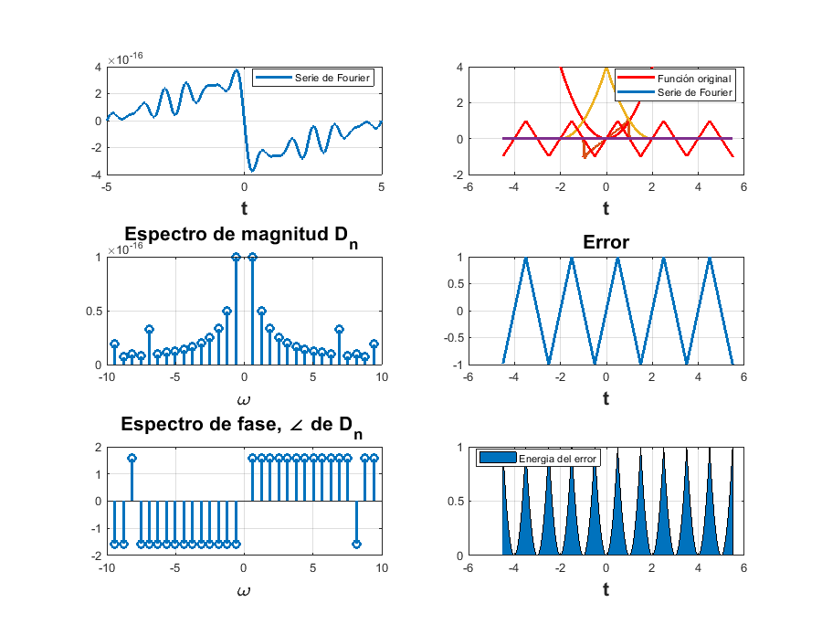
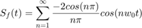
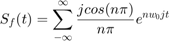
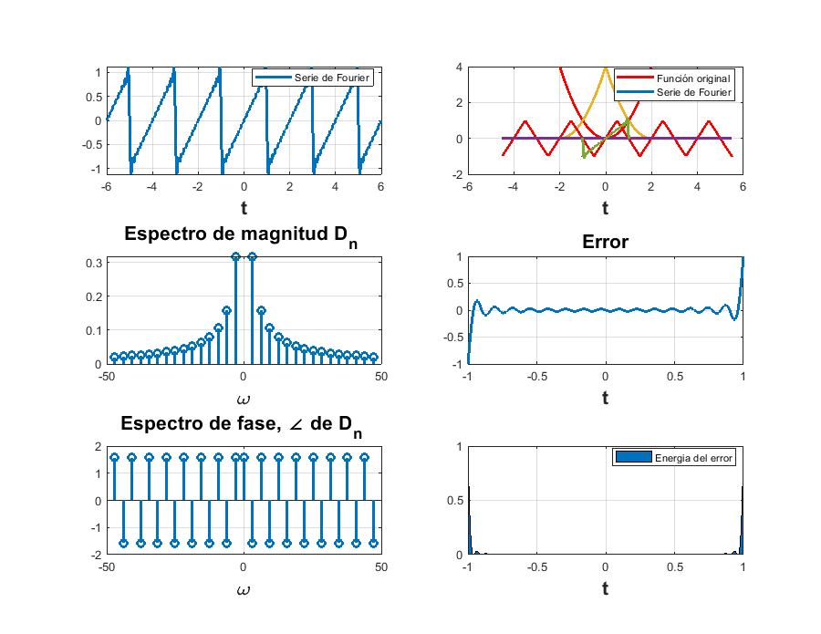
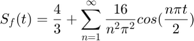
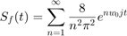
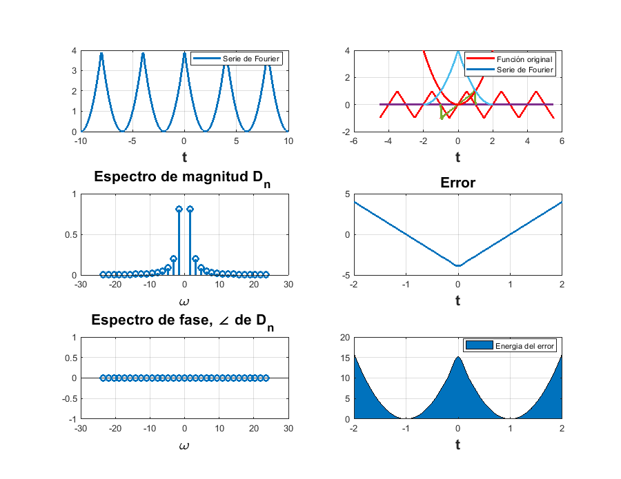
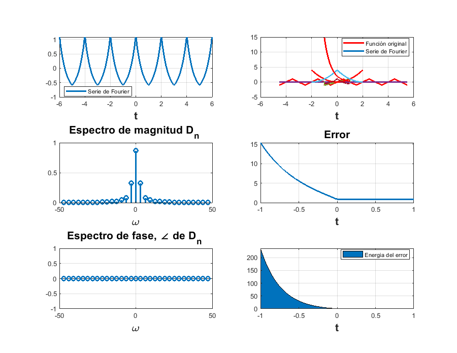

PRÁCTICA 5: Series de Fourier en Tiempo Contínuo
EQUIPO:
- Alcaraz Hernández Albert
- López Arce Samuel Adrián
- Riverón Reyes Adriana
- Valdés Domínguez Sergio
Contents
Objetivos
- Realizar gráficas de series de Fourier exponenciales y trigonométricas en tiempo continuo
- Manipulación de instrucciones en MATLAB
Ejemplo 6.2
Serie de Fourier trigonométrica compacta de una Onda triangular periódica
Encuentre la serie de Fourier trigonométrica compacta para la señal periódica triangular x(t) y dibuje los espectros de amplitud y fase para x(t).
Sabemos que la señal x(t) esta dada por la funcion:
2At cuando -0.5 < t < 0.5
t 2A(1-t) cuando 0.5 < t < 1.5
d0=0; dn=@(n) (((8/((n.^2)*(pi.^2))))*(sin(n*pi*2)))*(-j/2); t0=-4.5; tf=5.5; f=@(t) sawtooth((pi*t+1.6),1/2); armo=15; a=-5; b=5; sfc(t0,tf,dn,d0,f,armo,a,b)
PR08
PROBLEMA 1
Encuentra la expresión la serie de Fourier para la señal f(t) = t en el intervalo [-1,1]
Tenemos de forma analítica que la serie trigonométrica compacta es:

Y la compleja:

Tomando como base el siguiente problema se usará la función dada para encontrar los datos requeridos.
Para empezar, se cambió un poco la función para poder ajustar los parámetros que tenemos y que el resultado salga bien, de modo que al hacer eso colocamos las siguientes líneas.
d0=0; dn=@(n) (j*cos(pi*n))/(pi*n); t0=-1; tf=1; f=@(t) t; armo=15; a=-6; b=6; sfc(t0,tf,dn,d0,f,armo,a,b)
PROBLEMA 2
Encuentra la expresión de la serie de Fourier para la señal f(t) = t^2 en el intervalo [-2,2]
Tenemos de forma analítica, la serie trigonométrica compacta es:

Y para la compleja:

Ingresando los datos a la función, tenemos que:
d0=4/3; dn=@(n) (8)/(pi*n*pi*n); t0=-2; tf=2; f=@(t) t.^2; armo=15; a=-10; b=10; sfc(t0,tf,dn,d0,f,armo,a,b)
PR10
1. Sea una señal f(t) de periodo T, su descripción en intervalo (-T/2 , T/2) es: f(t) = ae^(-a|t|)
Su serie de Fourier en dicho intervalo es Sf(t)=sum(a^2(1-e^(-a)cos(nPi)/(a^2+n^2Pi^2))e^(jnPit))
a) Determine el valor de T
b) ¿Cuál es el valor promedio de f(t)?
c) La componente de f(t) en cierta frecuencia se puede expresar como Acos(3Pit). Determine el valor de A
d) Calcule la Serie de Fourier para la señal f(t) encontrado en a) y verifique que coincida con la proporcionada.
d0 = 0; dn = @(n) (([2^2]*[1-(exp(-2))*cos(n*pi)])/(2^2+(n^2)*pi^2)) t0 = -1; tf = 1; f = @(t) 2*exp(-2*t); armo = 15; a = -6; b = 6; sfc(t0,tf,dn,d0,f,armo,a,b)
dn =
function_handle with value:
@(n)(([2^2]*[1-(exp(-2))*cos(n*pi)])/(2^2+(n^2)*pi^2))
